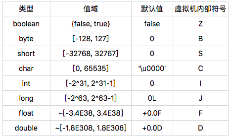

- 00 开篇词 为什么我们要学习Java虚拟机？.md.html
- 01 Java代码是怎么运行的？.md.html
- 02 Java的基本类型.md.html
- 03 Java虚拟机是如何加载Java类的.md.html
- 04 JVM是如何执行方法调用的？（上）.md.html
- 05 JVM是如何执行方法调用的？（下）.md.html
- 06 JVM是如何处理异常的？.md.html
- 07 JVM是如何实现反射的？.md.html
- 08 JVM是怎么实现invokedynamic的？（上）.md.html
- 09 JVM是怎么实现invokedynamic的？（下）.md.html
- 10 Java对象的内存布局.md.html
- 11 垃圾回收（上）.md.html
- 12 垃圾回收（下）.md.html
- 13 Java内存模型.md.html
- 14 Java虚拟机是怎么实现synchronized的？.md.html
- 15 Java语法糖与Java编译器.md.html
- 16 即时编译（上）.md.html
- 17 即时编译（下）.md.html
- 18 即时编译器的中间表达形式.md.html
- 19 Java字节码（基础篇）.md.html
- 20 方法内联（上）.md.html
- 21 方法内联（下）.md.html
- 22 HotSpot虚拟机的intrinsic.md.html
- 23 逃逸分析.md.html
- 24 字段访问相关优化.md.html
- 25 循环优化.md.html
- 26 向量化.md.html
- 27 注解处理器.md.html
- 28 基准测试框架JMH（上）.md.html
- 29 基准测试框架JMH（下）.md.html
- 30 Java虚拟机的监控及诊断工具（命令行篇）.md.html
- 31 Java虚拟机的监控及诊断工具（GUI篇）.md.html
- 32 JNI的运行机制.md.html
- 33 Java Agent与字节码注入.md.html
- 34 Graal：用Java编译Java.md.html
- 35 Truffle：语言实现框架.md.html
- 36 SubstrateVM：AOT编译框架.md.html
- 尾声丨道阻且长，努力加餐.html.md.html
- 工具篇 常用工具介绍.md.html
02 Java的基本类型
如果你了解面向对象语言的发展史，那你可能听说过 Smalltalk 这门语言。它的影响力之大，以至于之后诞生的面向对象语言，或多或少都借鉴了它的设计和实现。
在 Smalltalk 中，所有的值都是对象。因此，许多人认为它是一门纯粹的面向对象语言。
Java 则不同，它引进了八个基本类型，来支持数值计算。Java 这么做的原因主要是工程上的考虑，因为使用基本类型能够在执行效率以及内存使用两方面提升软件性能。
今天，我们就来了解一下基本类型在 Java 虚拟机中的实现。
public class Foo {
public static void main(String[] args) {
boolean 吃过饭没 = 2; // 直接编译的话 javac 会报错
if (吃过饭没) System.out.println(" 吃了 ");
if (true == 吃过饭没) System.out.println(" 真吃了 ");
}
}
在上一篇结尾的小作业里，我构造了这么一段代码，它将一个 boolean 类型的局部变量赋值为 2。为了方便记忆，我们给这个变量起个名字，就叫“吃过饭没”。
赋值语句后边我设置了两个看似一样的 if 语句。第一个 if 语句，也就是直接判断“吃过饭没”，在它成立的情况下，代码会打印“吃了”。
第二个 if 语句，也就是判断“吃过饭没”和 true 是否相等，在它成立的情况下，代码会打印“真吃了”。
当然，直接编译这段代码，编译器是会报错的。所以，我迂回了一下，采用一个 Java 字节码的汇编工具，直接对字节码进行更改。
那么问题就来了：当一个 boolean 变量的值是 2 时，它究竟是 true 还是 false 呢？
如果你跑过这段代码，你会发现，问虚拟机“吃过饭没”，它会回答“吃了”，而问虚拟机“真（==）吃过饭没”，虚拟机则不会回答“真吃了”。
那么虚拟机到底吃过没，下面我们来一起分析一下这背后的细节。
Java 虚拟机的 boolean 类型
首先，我们来看看 Java 语言规范以及 Java 虚拟机规范是怎么定义 boolean 类型的。
在 Java 语言规范中，boolean 类型的值只有两种可能，它们分别用符号“true”和“false”来表示。显然，这两个符号是不能被虚拟机直接使用的。
在 Java 虚拟机规范中，boolean 类型则被映射成 int 类型。具体来说，“true”被映射为整数 1，而“false”被映射为整数 0。这个编码规则约束了 Java 字节码的具体实现。
举个例子，对于存储 boolean 数组的字节码，Java 虚拟机需保证实际存入的值是整数 1 或者 0。
Java 虚拟机规范同时也要求 Java 编译器遵守这个编码规则，并且用整数相关的字节码来实现逻辑运算，以及基于 boolean 类型的条件跳转。这样一来，在编译而成的 class 文件中，除了字段和传入参数外，基本看不出 boolean 类型的痕迹了。
# Foo.main 编译后的字节码
0: iconst_2 // 我们用 AsmTools 更改了这一指令
1: istore_1
2: iload_1
3: ifeq 14 // 第一个 if 语句，即操作数栈上数值为 0 时跳转
6: getstatic java.lang.System.out
9: ldc " 吃了 "
11: invokevirtual java.io.PrintStream.println
14: iload_1
15: iconst_1
16: if_icmpne 27 // 第二个 if 语句，即操作数栈上两个数值不相同时跳转
19: getstatic java.lang.System.out
22: ldc " 真吃了 "
24: invokevirtual java.io.PrintStream.println
27: return
在前面的例子中，第一个 if 语句会被编译成条件跳转字节码 ifeq，翻译成人话就是说，如果局部变量“吃过饭没”的值为 0，那么跳过打印“吃了”的语句。
而第二个 if 语句则会被编译成条件跳转字节码 if_icmpne，也就是说，如果局部变量的值和整数 1 不相等，那么跳过打印“真吃了”的语句。
可以看到，Java 编译器的确遵守了相同的编码规则。当然，这个约束很容易绕开。除了我们小作业中用到的汇编工具 AsmTools 外，还有许多可以修改字节码的 Java 库，比如说 ASM [1] 等。
对于 Java 虚拟机来说，它看到的 boolean 类型，早已被映射为整数类型。因此，将原本声明为 boolean 类型的局部变量，赋值为除了 0、1 之外的整数值，在 Java 虚拟机看来是“合法”的。
在我们的例子中，经过编译器编译之后，Java 虚拟机看到的不是在问“吃过饭没”，而是在问“吃过几碗饭”。也就是说，第一个 if 语句变成：你不会一碗饭都没吃吧。第二个 if 语句则变成：你吃过一碗饭了吗。
如果我们约定俗成，每人每顿只吃一碗，那么第二个 if 语句还是有意义的。但如果我们打破常规，吃了两碗，那么较真的 Java 虚拟机就会将第二个 if 语句判定为假了。
Java 的基本类型
除了上面提到的 boolean 类型外，Java 的基本类型还包括整数类型 byte、short、char、int 和 long，以及浮点类型 float 和 double。

Java 的基本类型都有对应的值域和默认值。可以看到，byte、short、int、long、float 以及 double 的值域依次扩大，而且前面的值域被后面的值域所包含。因此，从前面的基本类型转换至后面的基本类型，无需强制转换。另外一点值得注意的是，尽管他们的默认值看起来不一样，但在内存中都是 0。
在这些基本类型中，boolean 和 char 是唯二的无符号类型。在不考虑违反规范的情况下，boolean 类型的取值范围是 0 或者 1。char 类型的取值范围则是 [0, 65535]。通常我们可以认定 char 类型的值为非负数。这种特性十分有用，比如说作为数组索引等。
在前面的例子中，我们能够将整数 2 存储到一个声明为 boolean 类型的局部变量中。那么，声明为 byte、char 以及 short 的局部变量，是否也能够存储超出它们取值范围的数值呢？
答案是可以的。而且，这些超出取值范围的数值同样会带来一些麻烦。比如说，声明为 char 类型的局部变量实际上有可能为负数。当然，在正常使用 Java 编译器的情况下，生成的字节码会遵守 Java 虚拟机规范对编译器的约束，因此你无须过分担心局部变量会超出它们的取值范围。
Java 的浮点类型采用 IEEE 754 浮点数格式。以 float 为例，浮点类型通常有两个 0，+0.0F 以及 -0.0F。
前者在 Java 里是 0，后者是符号位为 1、其他位均为 0 的浮点数，在内存中等同于十六进制整数 0x8000000（即 -0.0F 可通过 Float.intBitsToFloat(0x8000000) 求得）。尽管它们的内存数值不同，但是在 Java 中 +0.0F == -0.0F 会返回真。
在有了 +0.0F 和 -0.0F 这两个定义后，我们便可以定义浮点数中的正无穷及负无穷。正无穷就是任意正浮点数（不包括 +0.0F）除以 +0.0F 得到的值，而负无穷是任意正浮点数除以 -0.0F 得到的值。在 Java 中，正无穷和负无穷是有确切的值，在内存中分别等同于十六进制整数 0x7F800000 和 0xFF800000。
你也许会好奇，既然整数 0x7F800000 等同于正无穷，那么 0x7F800001 又对应什么浮点数呢？
这个数字对应的浮点数是 NaN（Not-a-Number）。
不仅如此，[0x7F800001, 0x7FFFFFFF] 和 [0xFF800001, 0xFFFFFFFF] 对应的都是 NaN。当然，一般我们计算得出的 NaN，比如说通过 +0.0F/+0.0F，在内存中应为 0x7FC00000。这个数值，我们称之为标准的 NaN，而其他的我们称之为不标准的 NaN。
NaN 有一个有趣的特性：除了“!=”始终返回 true 之外，所有其他比较结果都会返回 false。
举例来说，“NaN<1.0F”返回 false，而“NaN>=1.0F”同样返回 false。对于任意浮点数 f，不管它是 0 还是 NaN，“f!=NaN”始终会返回 true，而“f==NaN”始终会返回 false。
因此，我们在程序里做浮点数比较的时候，需要考虑上述特性。在本专栏的第二部分，我会介绍这个特性给向量化比较带来什么麻烦。
Java 基本类型的大小
在第一篇中我曾经提到，Java 虚拟机每调用一个 Java 方法，便会创建一个栈帧。为了方便理解，这里我只讨论供解释器使用的解释栈帧（interpreted frame）。
这种栈帧有两个主要的组成部分，分别是局部变量区，以及字节码的操作数栈。这里的局部变量是广义的，除了普遍意义下的局部变量之外，它还包含实例方法的“this 指针”以及方法所接收的参数。
在 Java 虚拟机规范中，局部变量区等价于一个数组，并且可以用正整数来索引。除了 long、double 值需要用两个数组单元来存储之外，其他基本类型以及引用类型的值均占用一个数组单元。
也就是说，boolean、byte、char、short 这四种类型，在栈上占用的空间和 int 是一样的，和引用类型也是一样的。因此，在 32 位的 HotSpot 中，这些类型在栈上将占用 4 个字节；而在 64 位的 HotSpot 中，他们将占 8 个字节。
当然，这种情况仅存在于局部变量，而并不会出现在存储于堆中的字段或者数组元素上。对于 byte、char 以及 short 这三种类型的字段或者数组单元，它们在堆上占用的空间分别为一字节、两字节，以及两字节，也就是说，跟这些类型的值域相吻合。
因此，当我们将一个 int 类型的值，存储到这些类型的字段或数组时，相当于做了一次隐式的掩码操作。举例来说，当我们把 0xFFFFFFFF（-1）存储到一个声明为 char 类型的字段里时，由于该字段仅占两字节，所以高两位的字节便会被截取掉，最终存入“\uFFFF”。
boolean 字段和 boolean 数组则比较特殊。在 HotSpot 中，boolean 字段占用一字节，而 boolean 数组则直接用 byte 数组来实现。为了保证堆中的 boolean 值是合法的，HotSpot 在存储时显式地进行掩码操作，也就是说，只取最后一位的值存入 boolean 字段或数组中。
讲完了存储，现在我来讲讲加载。Java 虚拟机的算数运算几乎全部依赖于操作数栈。也就是说，我们需要将堆中的 boolean、byte、char 以及 short 加载到操作数栈上，而后将栈上的值当成 int 类型来运算。
对于 boolean、char 这两个无符号类型来说，加载伴随着零扩展。举个例子，char 的大小为两个字节。在加载时 char 的值会被复制到 int 类型的低二字节，而高二字节则会用 0 来填充。
对于 byte、short 这两个类型来说，加载伴随着符号扩展。举个例子，short 的大小为两个字节。在加载时 short 的值同样会被复制到 int 类型的低二字节。如果该 short 值为非负数，即最高位为 0，那么该 int 类型的值的高二字节会用 0 来填充，否则用 1 来填充。
总结与实践
今天我介绍了 Java 里的基本类型。
其中，boolean 类型在 Java 虚拟机中被映射为整数类型：“true”被映射为 1，而“false”被映射为 0。Java 代码中的逻辑运算以及条件跳转，都是用整数相关的字节码来实现的。
除 boolean 类型之外，Java 还有另外 7 个基本类型。它们拥有不同的值域，但默认值在内存中均为 0。这些基本类型之中，浮点类型比较特殊。基于它的运算或比较，需要考虑 +0.0F、-0.0F 以及 NaN 的情况。
除 long 和 double 外，其他基本类型与引用类型在解释执行的方法栈帧中占用的大小是一致的，但它们在堆中占用的大小确不同。在将 boolean、byte、char 以及 short 的值存入字段或者数组单元时，Java 虚拟机会进行掩码操作。在读取时，Java 虚拟机则会将其扩展为 int 类型。
今天的动手环节，你可以观测一下，将 boolean 类型的值存入字段中时，Java 虚拟机所做的掩码操作。
你可以将下面代码中 boolValue = true 里的 true 换为 2 或者 3，看看打印结果与你的猜测是否相符合。
熟悉 Unsafe 的同学，可以使用 Unsafe.putBoolean 和 Unsafe.putByte 方法，看看还会不会做掩码操作。
public class Foo {
static boolean boolValue;
public static void main(String[] args) {
boolValue = true; // 将这个 true 替换为 2 或者 3，再看看打印结果
if (boolValue) System.out.println("Hello, Java!");
if (boolValue == true) System.out.println("Hello, JVM!");
}
}